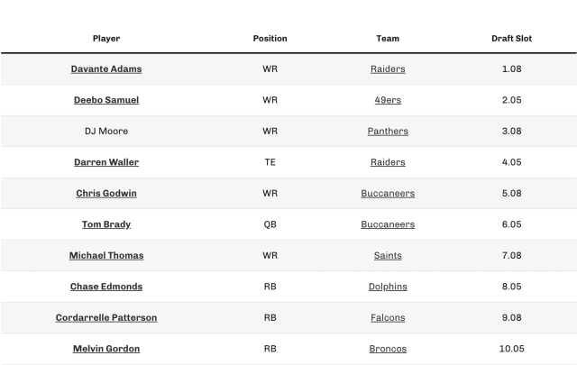
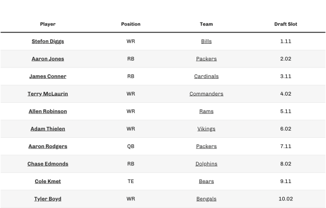
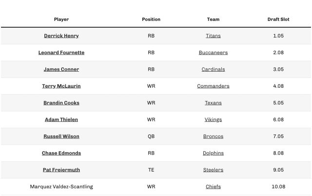

Drafting is maybe the most important part of the season, and probably is the biggest factor in determing your success. During the draft the core of your team is created that will be with you for the entire season.
Drafting Basics
The basics of drafting are that each player will get one pick each round to select a player and the players will pick in 15 rounds. There are many ways to manage the draft but the most common form involves each player randomly being given a number where they draft from and the next round the order is reversed. For example, if you are in a 10-man league and have the 6th pick, the next round you will have the 4th pick.
Draft Strategies
There are many ways to start building your team in the draft, and specifically there are strategies for the early rounds depending on whats available. The following draft strategies involve your first few picks and depending on which strategy you take what to do after.
-
Zero RB
Zero RB is a strategy that involves taking no Running Backs in the first few round and taking other positions. If this is what you choose to do then through round 7 about you should fill every other spot on your team and make sure your WR are deep. then you can take RB for many of your last picks and make sure you choose players that have high upside. This way if they end up being weak then you have your other positions to carry you.
 -
Hero RB
Hero RB is the middle strategy where you take one RB in the early rounds and thats it. This is a balanced strategy and you should just focus on taking the best player available at this point. Maybe lean more for WR in rounds 3-7, and then RB in the later rounds 9-12.
 -
Double RB
The double RB strategy is the other extreme where you take 2 or more RB in the first few rounds. this strategy will make the later draft a lote easier because finding good RB is the most rare. In the middle rounds you should fill every other position and get deep WR. at the end of the draft you can find some backup RB.
 -
Late Rounds
The late rounds are about rounds 11-15 and are after you have found all your starters and you can fill your bench. your main priority in these rounds is to find good young RB and WR, preferablly rookies. These players could become valuable starters at the end of the year when they get better. These players will make your team deep and they have much higher upside then older veterans.
To Do Before Draft
Complete the below to-do list to make sure you are ready to draft your team. Once you finish an item, you can cross-it off.
- Read about Draft Strategies
- Do mock draft
- Watch the preseason
- Create your league
- Review last year's results